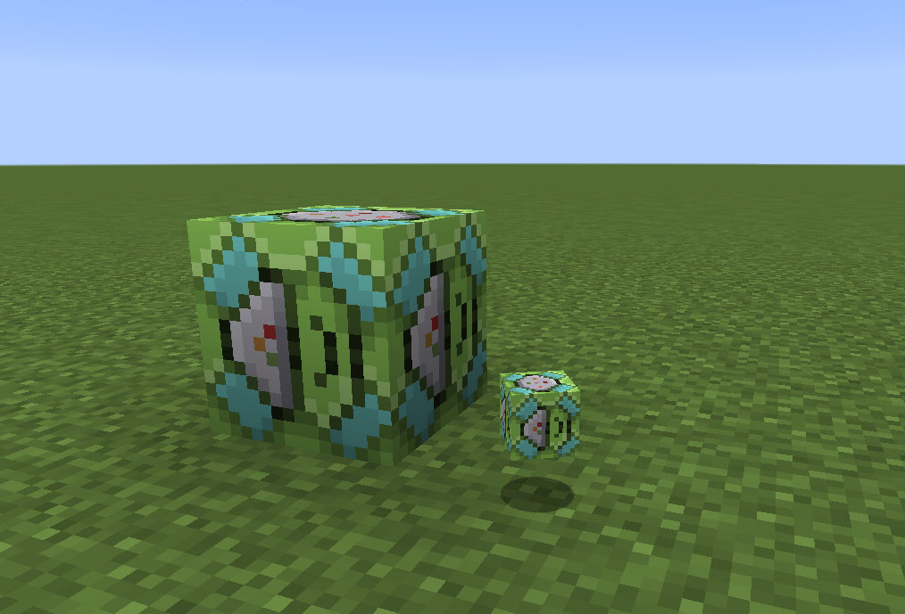

Ability Field Amplifier¶
This block uses Forge Energy to work, and can be powered with the Energy Siphon.
The Ability Field Amplifier (AFA) has two uses:
Broadcast an Ability over a volume around the block
Broadcast Shiny Charm effect around the block (second worst use for shiny charm)
{kind=link}
The Empty GUI for the AFA, this shows the item slot, as well as the < and > buttons used for selecting the range of effect. The Power display is ordered: needed/provided, so if the second number is smaller than the first, then you need to provide more power for the block to work.¶
To broadcast an ability over a volume, you must first capture a pokémob which has the required ability, below are some example abilities, and their effects:
Honey Gather- Applies bonemeal effect on random blocks in rangeDamp- Prevents explosions from detonating in the range
{kind=link}
Here is an example of setting the ability to Honey Gather, the range is set to 4 blocks, and it currently requires 4 energy per tick, 0 of which is provided.¶
For the use with a shiny charm, place the charm in the slot, and then select the range in a similar manner.
{kind=link}
Here is the second worst application of the shiny charm displayed.¶